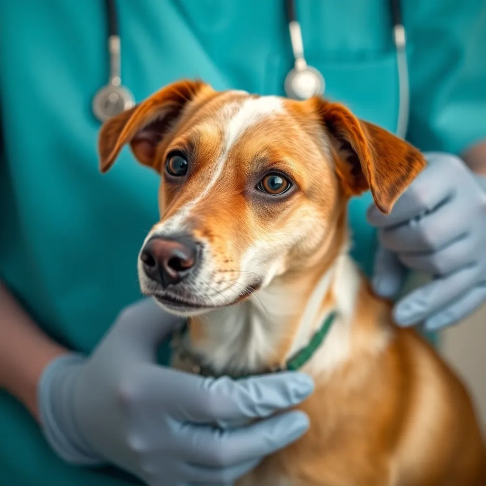

Adopta con nosotros
Adopción responsable
Nuestro proceso de adopción asegura que cada perrito llegue a un hogar comprometido con su bienestar a largo plazo.
Conocer masSeguimiento post-adopción
Te acompañamos después de la adopción con consejos y apoyo para asegurar una transición exitosa.
Conocer mas

Salud garantizada
Todos nuestros perritos reciben atención veterinaria completa, incluyendo vacunas, desparasitación y esterilización.
Conocer mas